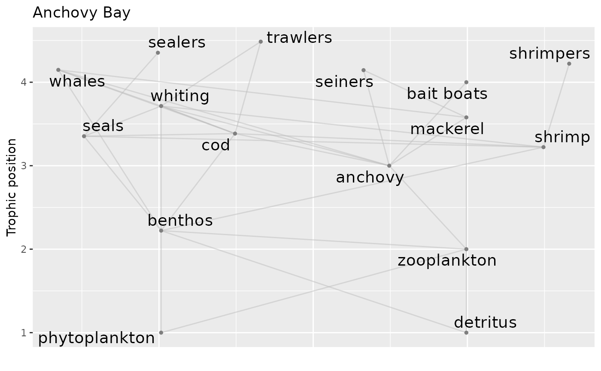

Plots the food web associated with an Rpath object using ggplot functions
Usage
ggwebplot(
Rpath.obj,
eco.name = attr(Rpath.obj, "eco.name"),
line.col = "grey",
highlight = NULL,
highlight.col = c("black", "red", "orange"),
labels = FALSE,
label.num = FALSE,
label.cex = 1,
fleets = FALSE,
type.col = "grey50",
box.order = NULL,
line.alpha = 0.5,
point.size = 1,
text.size = 5,
max.overlaps = 10
)Arguments
- Rpath.obj
Rpath model created by the
rpath()function.- eco.name
Optional name of the ecosystem. Default is the `eco.name` attribute from the rpath object.
- line.col
The color of the lines between nodes of the food web.
- highlight
Set to the group number or name to highlight the connections of that group. Valid values are found in the `Group` field of the object created from running
rpath().- highlight.col
Color of the connections to the highlighted group, vector of length 3. Defaults to black = predator, red = prey, orange = fleet.
- labels
Logical whether or not to display group names.
- label.num
Logical whether or not to display group numbers instead of points at nodes. If
TRUE,type.colmust be length 1, not 4.- label.cex
Numeric value of the relative size of the labels within the plot.
- fleets
Logical value indicating whether or not to include fishing fleets in the food web.
- type.col
The color of the points corresponding to the types of the group. Can either be of length 1 or 4. Color order will be living, primary producers, detrital, and fleet groups.
- box.order
Vector of box numbers to change the default plot order. Must include all box numbers. Passed to
summarize.for.webplot()- line.alpha
Transparency of lines between nodes of the food web.
- point.size
Size of points at nodes.
- text.size
Size of text
- max.overlaps
Maximum number of overlaps allowed for group labels by
ggrepel
Examples
# Read in Rpath parameter file, generate and name model object
Rpath.obj <- rpath(AB.params, eco.name = "Anchovy Bay")
# Plot food web diagram with all groups labeled, including fleets, using ggplot
ggwebplot(Rpath.obj, labels = TRUE, fleets = TRUE)

# Plot food web diagram without labels, highlighting connections of cod group
ggwebplot(Rpath.obj, highlight = "cod",fleets = TRUE)